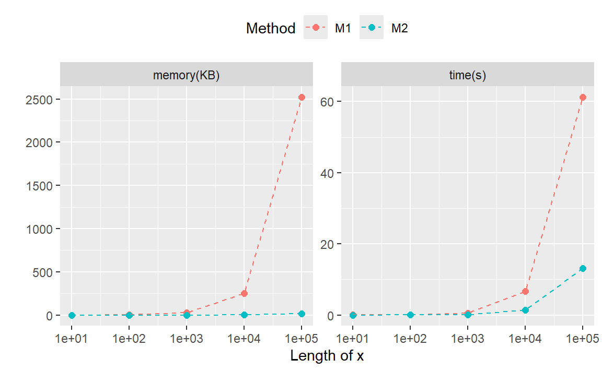

# 示例数据
dat <- tibble::tribble(
~species, ~keggID,
"Homo sapiens", "C00001;C00002;C00003",
"Mus musculus", "C00002;C00004;C00005",
"Rattus norvegicus", "C00001;C00002;C00006"
)
keggID_metabolite <- tibble::tribble(
~keggID, ~metabolite,
"C00001", "Amino acid",
"C00002", "Carbohydrate",
"C00003", "Lipid",
"C00004", "Carbohydrate",
"C00005", "Lipid",
"C00006", "Carbohydrate"
)替换多对字符串
purrr
tidyverse
考虑下面的情景：你提取到每个物种特有的keggID号，为了节省空间，你将keggID号拼接了起来。与此同时，你需要将keggID号对应得代谢物名称追加到数据集中。
我们可以按照常规做法：将dat中的keggID列拆分，然后将代谢物信息追加到数据中，最后再进行字符串拼接。
res1 <- dat |>
tidyr::separate_rows(keggID, sep = ";") |>
dplyr::left_join(keggID_metabolite, by = "keggID") |>
dplyr::group_by(species) |>
dplyr::summarise(
keggID = paste(keggID, collapse = ";"),
metabolite = paste(metabolite, collapse = ";")
)
res1
#> # A tibble: 3 × 3
#> species keggID metabolite
#> <chr> <chr> <chr>
#> 1 Homo sapiens C00001;C00002;C00003 Amino acid;Carbohydrate;Lipid
#> 2 Mus musculus C00002;C00004;C00005 Carbohydrate;Carbohydrate;Lipid
#> 3 Rattus norvegicus C00001;C00002;C00006 Amino acid;Carbohydrate;Carbohydrate我们也可以使用泛函map() + reduce2() + stringr::str_replace_all()直接替换字符串。
StrReplace <- function(string, patterns, replacements) {
purrr::reduce2(
patterns,
replacements,
.f = stringr::str_replace_all,
.init = string
)
}
res2 <- dat |>
dplyr::mutate(
metabolite = StrReplace(
keggID,
patterns = keggID_metabolite$keggID,
replacements = keggID_metabolite$metabolite
)
)
res2
#> # A tibble: 3 × 3
#> species keggID metabolite
#> <chr> <chr> <chr>
#> 1 Homo sapiens C00001;C00002;C00003 Amino acid;Carbohydrate;Lipid
#> 2 Mus musculus C00002;C00004;C00005 Carbohydrate;Carbohydrate;Lipid
#> 3 Rattus norvegicus C00001;C00002;C00006 Amino acid;Carbohydrate;Carbohydrate进行两种方法的耗时对比：
method1 <- function(data, keggID_metabolite) {
res <- data |>
tidyr::separate_rows(keggID, sep = ";") |>
dplyr::left_join(keggID_metabolite, by = "keggID") |>
dplyr::group_by(species) |>
dplyr::summarise(
keggID = paste(keggID, collapse = ";"),
metabolite = paste(metabolite, collapse = ";")
)
return(res)
}
method2 <- function(data, keggID_metabolite) {
res <- data |>
dplyr::mutate(
metabolite = StrReplace(
keggID,
patterns = keggID_metabolite$keggID,
replacements = keggID_metabolite$metabolite
)
)
return(res)
}
bench_dat <- function(dat, n) {
data <- dplyr::bind_rows(replicate(n, dat, simplify = FALSE)) |>
dplyr::mutate(species = dplyr::row_number())
bench::mark(
M1 = method1(data, keggID_metabolite),
M2 = method2(data, keggID_metabolite),
time_unit = "ms"
)
}
performances <- purrr::map_dfr(10^(1:5), ~ bench_dat(dat, .x))
#> Warning: Some expressions had a GC in every iteration; so filtering is
#> disabled.
#> Warning: Some expressions had a GC in every iteration; so filtering is
#> disabled.
df_perf <- tibble::tibble(
n = rep(10^(1:5), each = 2),
method = attr(performances$expression, "description"),
`time(s)` = performances$median / 100,
`memory(KB)` = as.numeric(bench::as_bench_bytes(performances$mem_alloc)) / 1024 / 1024
) |>
tidyr::pivot_longer(cols = c(`time(s)`, `memory(KB)`), names_to = "type", values_to = "value")
library(ggplot2)
ggplot(df_perf, aes(n, value, col = method)) +
geom_point(size = 2) +
geom_line(linetype = 2) +
scale_x_log10() +
facet_wrap(~type, scales = "free_y") +
labs(
x = "Length of x",
y = "",
color = "Method"
) +
theme(legend.position = "top")
从结果中我们可以看到，随着要替换字符串的向量增加，无论是耗时还是内存占用，方法二都具有明显优势。
Back to top